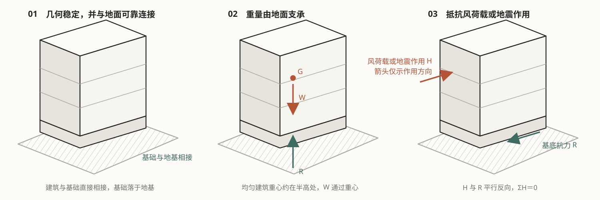
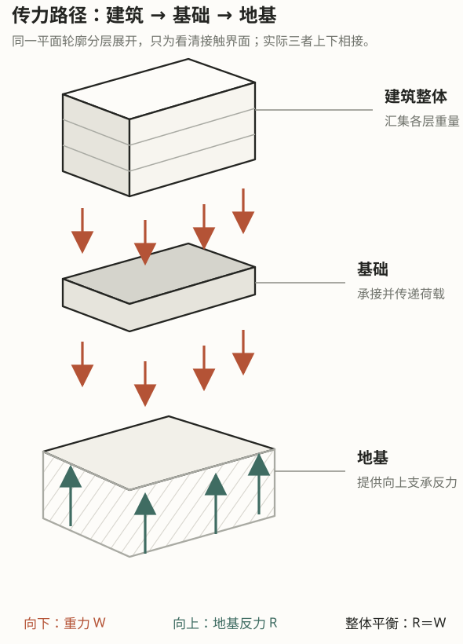
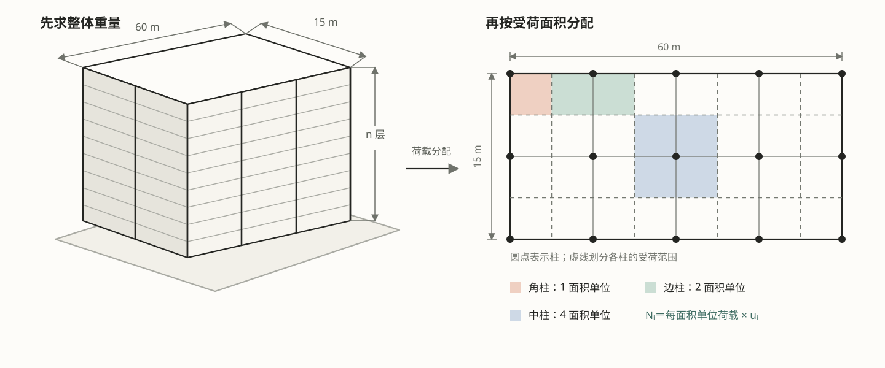
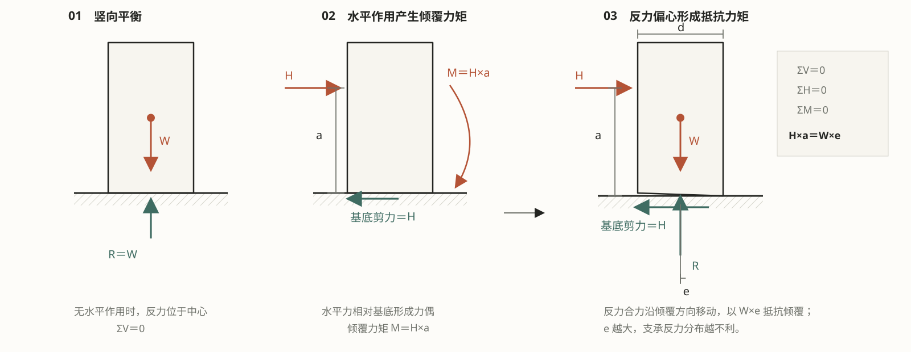
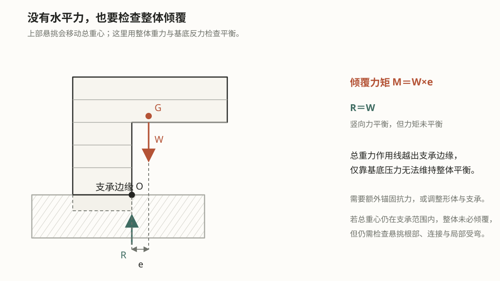
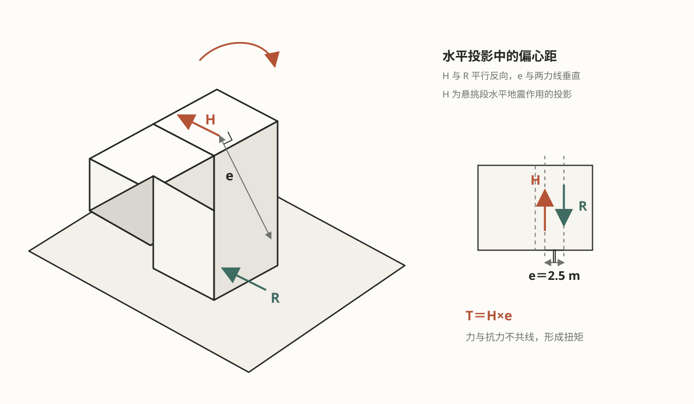

有刚度，并固定于地面
整体不能随意改变形状，也不能相对地面自由移动。基础与支承体系把建筑和场地连成稳定的整体。
STRUCTURAL BALANCE · INTERACTIVE LAB
方案尚未落到梁柱尺寸时，先把整个建筑抽象成一个有质量、有刚度、与地面相连的整体。你要回答的不是“这根柱多大”，而是“力如何进入地面，整体如何保持平衡”。
核心概念 / 01
建筑外形可以先来自功能与空间组织，但任何形体一旦要成为建筑，就必须同时满足三项最基本的物理要求。

整体不能随意改变形状，也不能相对地面自由移动。基础与支承体系把建筑和场地连成稳定的整体。
恒载与活载最终都要传到地基。竖向力可以经墙形成线支承，也可以经柱形成点支承。
风荷载或地震作用会产生剪力、倾覆力矩，偏心时还会产生扭矩。整体平衡比单个构件强度更先决定方案。
整体假定是一种“先忽略内部细节”的分析策略。先确定总荷载、总支承反力及其作用位置，再把内部抗力留给后续分体系设计。
交互实验 / 02
切换实验或拖动参数，直接观察受力关系与计算结果。仅在需要表达建筑整体运动时使用动画；数值单位采用 kN、m 与 kN/m²。

几何稳定、重量支承和水平抗力是同一个整体必须同时满足的条件。固定与水平作用合并展示，不再进行循环或分层动画。
建筑通过基础固定于地面；重力由竖向反力支承，风荷载或地震作用由基底剪力与抗倾覆体系承担。

教学算例采用 15 m × 60 m 的相同楼层平面，并假设全部恒载与活载均布。选择柱位类型，查看估算结果。
来源与符号：由“楼面均布荷载 × 受荷面积 × 层数”估算第 i 根柱的轴力。A = 15 × 60 = 900 m²，为单层建筑面积；q 为楼面均布荷载（kN/m²）；n 为层数；uᵢ 为柱位受荷面积系数，角柱 0.5、边柱 1、中柱 2；Nᵢ 单位为 kN。16 个基本面积单位恰好铺满平面，假定各层荷载相同且全部传至柱，不含柱自重、荷载不均及体系重分配。


保持 W = 43,200 kN、a = 15 m、d = 15 m 不变，只改变水平合力，计算对应的倾覆力矩与反力偏心。

水平合力与支承抗力在平面内不共线，就会形成扭矩。这里只演示一种偏心方向；偏到另一侧时，扭矩方向相反。
学习完成：你已从整体层面理解竖向支承、抗倾覆与抗扭。